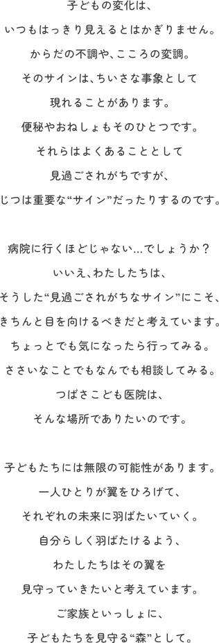

ごあいさつ
ホームページをご覧いただき、ありがとうございます。
つばさこども医院は、「子ども達には無限の可能性があり、未来に羽ばたく翼（つばさ）を持っている」という思いを胸に、このたび開院いたしました。子どもたちは一人ひとりがかけがえのない存在であり、その成長の先には大きな可能性が広がっています。私たちは、病気の治療だけでなく、日々の健康を見守り、安心して受診できる環境づくりを大切にしてまいります。すべての子どもたちが健やかに成長し、自分らしく未来へ羽ばたけるよう、安心できる医療と温かなサポートを提供いたします。
15年以上にわたる金沢大学附属病院での小児外科医としての経験を礎として、お子さまとご家族に真摯に寄り添いながら、地域に根ざしたクリニックを目指してまいります。どうぞよろしくお願い申し上げます。
院長酒井 清祥
略歴
- 金沢大学医学部卒 H14
- 金沢大学第二外科学教室
- 金沢大学肝胆膵・移植外科／小児外科教室
- 金沢大学附属病院 小児外科診療科長
- 金沢大学附属病院 臨床准教授
資格
- 医学博士（金沢大学）
- 日本小児外科学会 小児外科専門医
- 日本外科学会 外科専門医
- 日本周産期・新生児学会 新生児認定外科医
- 日本小児血液・がん学会 小児がん認定外科医
- 食育インストラクター
当院の特徴
当院の概要
-
医院名
つばさこども医院
-
住所
ダミー〒921-8832
石川県野々市市
藤平田1丁目000番 -
院長
酒井 清祥
-
開院
2026年10月1日
-
TEL
000-000-0000
-
診療内容
小児外科 / 小児科
-
休診日
水曜 / 土曜午後 / 日・祝